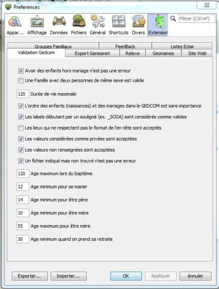
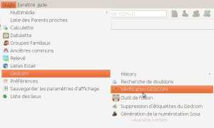

|
Vérification Gedcom a un seul panneau de réglage, il
concerne les références de ce que vous considérez comme normal.  Ce réglage est facile à revoir s'il ne convient pas à votre généalogie. |
Le réglage de l'image est celui proposé par défaut. Les boutons [OK] / [Annuler] servent à Valider / Abandonner les choix. Les boutons [Export] / [Importer] servent à Sauvegarder / Récupérer le fichier de configuration d'Ancestris. |
|  |
| En haut à gauche, une disquette indique le moyen
de sauvegarder le document produit. Trois types de fichier sont disponibles pour cette sauvegarde: .csv, .html , .pdf. Ces trois formats sont efficaces. |
|
|
|